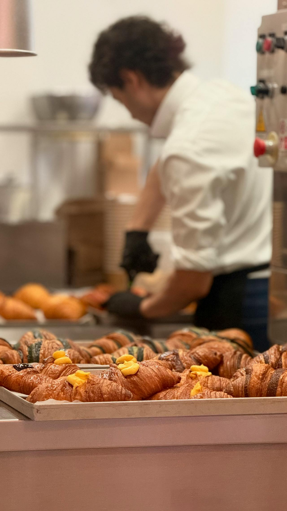
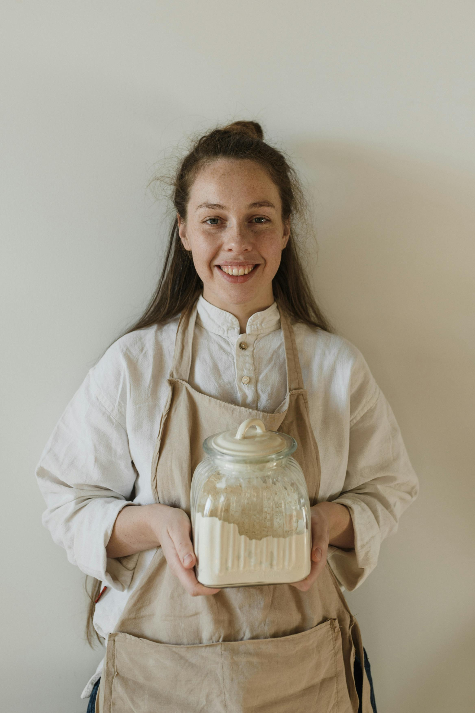
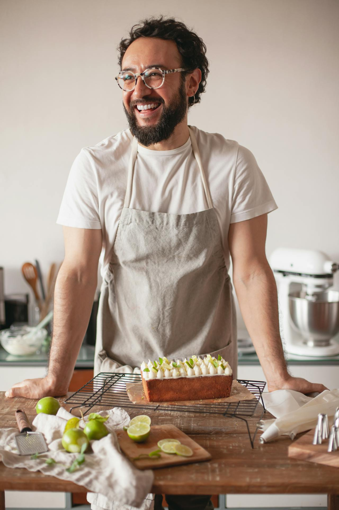

Om oss
Vi driver ett konditori i Stockholm med fokus på hantverk, trevligt bemötande och bakverk som smakar som de ska.
Bakat från grunden, varje dag
Ditt Konditori började som en enkel idé. Vi ville skapa en plats där det känns lätt att titta in oavsett om du är på väg till jobbet, ska fira något stort eller bara behöver en paus. Vi bakar från grunden i vårt eget bageri och gillar det klassiska, men vi är inte rädda för att prova nytt när säsongen förändras och inspirationen slår till.
Vi försöker ta ansvar för hela kedjan, inte bara det som syns i disken. Därför samarbetar vi med Too Good To Go och säljer gårdagens produkter till ett lägre pris. Mindre matsvinn, fler fikastunder. Det känns som en ganska rimlig grej att göra i en värld som annars älskar att slänga fullt ätbar mat.


Arina
Arina är bagaren som håller ordning på grunderna. Degar, råvaror och förberedelser, allt som gör att resten av dagen flyter på. Hon gillar när bakningen får ta tid och när små detaljer gör stor skillnad. För Arina handlar ett bra konditori om omtanke i vardagen, samma lugn i händerna oavsett om det är en bulle eller en stor beställning.
Cristian
Cristian är konditorn som alltid testar en ny idé när köket är som lugnast. Han gillar rena smaker och jobbar gärna med citrus, krämiga fyllningar och klassiska bakverk som får ett litet lyft. Det bästa han vet är när någon tar första tuggan och bara ler utan att säga något. Då vet han att det blev rätt.
